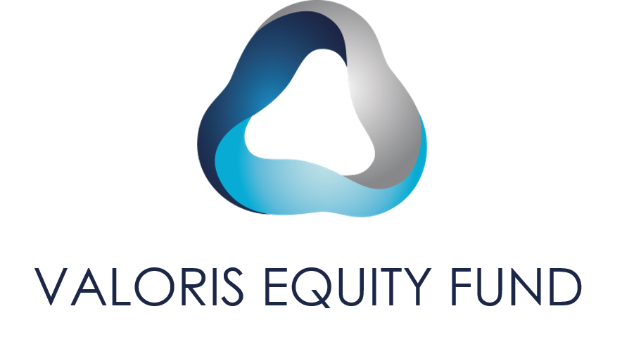

74 ans d'expertise au service de l'industrie marocaine
Creee en 1951 par un entrepreneur hongrois installe au Maroc, Consortium Marocain (CM) est devenue au fil des ans l'un des principaux importateurs, distributeurs et fabricants de produits chimiques pour l'industrie marocaine, tous secteurs confondus.
Forte de 74 ans d'experience dans le secteur du negoce et de la manufacture de produits chimiques et parachimiques, CM possede un savoir-faire reconnu dans la distribution de produits chimiques de specialites.
Presente dans divers secteurs d'activites (Textile, Colles, Peinture, Batiment, Cosmetique, Detergent, Agroalimentaire, Traitement des eaux et Cuir), CM a su s'imposer comme un acteur incontournable au Maroc.
Depuis 2023, la societe est controlee par le fonds de Private Equity Valoris Equity Fund qui detient plus de 87% du capital.
Les grandes etapes de notre developpement
Des standards de qualite reconnus internationalement
Certifie depuis 2004, renouvele avec succes en Mars 2025 sans aucune non-conformite relevee. L'une des premieres entreprises du secteur a obtenir cette certification.
Certification obtenue suite a notre expansion dans le domaine Food-Pharma, garantissant la conformite de nos produits aux normes alimentaires.
Membre actif de la Federation Marocaine de Chimie et de la Parachimie, contribuant au developpement du secteur au Maroc.
Environnement, Social et Gouvernance au coeur de notre strategie
Politique environnementale formalisee garantissant le respect des conformites nationales, la maitrise des risques et une gestion ecoresponsable des dechets. Suivi mensuel des emissions CO2 et de la consommation d'energie.
19% de feminisation des effectifs, 30% aux postes d'encadrement et 20% au Conseil d'Administration. Comite d'Hygiene et de Securite avec le medecin du travail. Charte d'Achat Responsable.
Classee "Bonnes Pratiques" selon la notation Valoris Capital. Systeme de management qualite formalise depuis 2004. Comite de Suivi et procedures de gestion des reclamations (reponse sous 48h).
Une structure solide pour un developpement durable

87,8%
12,2%